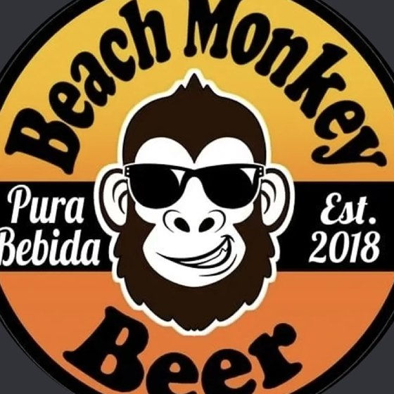

BATCH 001 · SMALL-BATCH AI · EST. 2018
BeachMonkey.ai
Pura Beta.
Pura Vida
the vibe
Pura Bebida
the brewery years
Pura Beta
the AI chapter
BeachMonkey started in 2018 as a brewery — small batches, salt air, no hurry. The beer taught us the only process worth keeping: start with good ingredients, ferment patiently, share generously.
After decades of shipping software for one of the world's biggest tech companies, our founder is trading the campus badge for the beach — and pointing the brand at what he's always done on the side: building things. This time, with AI.
Same monkey. Same beach. Different ferment. Everything here ships as a beta, stays curious, and gets better with every batch. That's not a disclaimer — it's the philosophy.
Now fermenting
- v0.1.x Personal AI agents that actually run a household — calendars, briefs, backlogs conditioning
- v0.2.x Small-batch AI builds for small businesses — practical, owned, no hype in primary
- v0.3.x Field notes from the new phase — what works, what foams over recipe stage